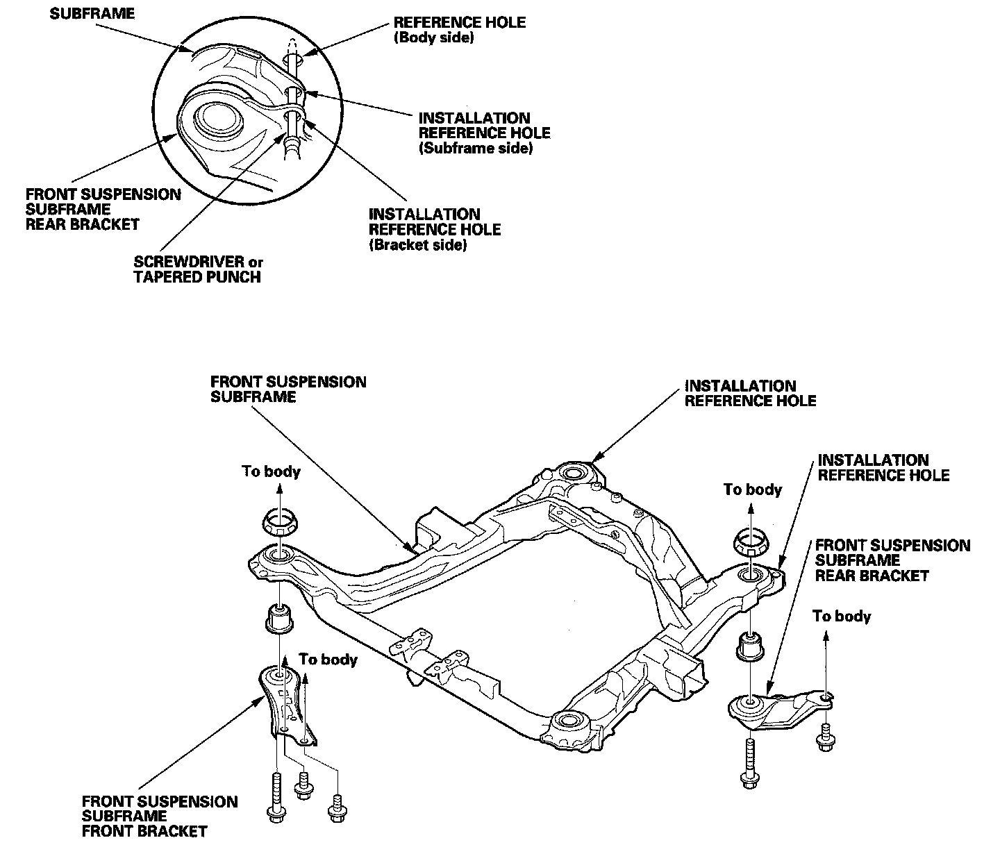

Front Subframe: Service and Repair
Subframe ReplacementFront Subframe Torque
After removing the subframe mounting bolts and front subframe stiffener mounting bolts, be sure to replace them with new ones.
Front Subframe Alignment

NOTE:
- After mounting the subframe and brackets loosely, align all of the installation reference holes in the subframe, in the subframe front bracket, and in the body using a screwdriver or tapered punch as a guide, then tighten the bolts.
- After reinstalling all removed parts, check and adjust the front wheel alignment.